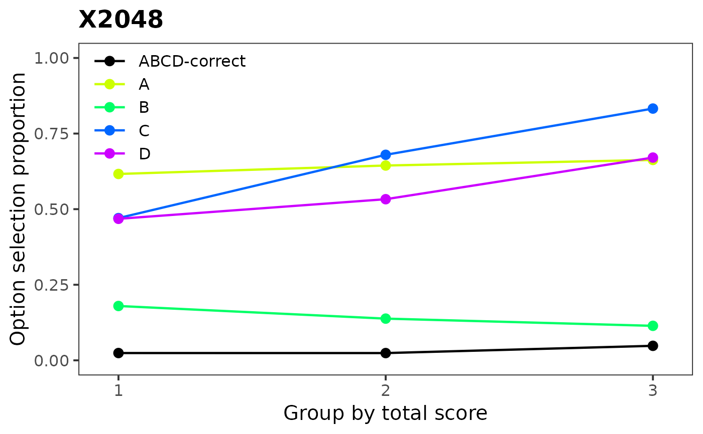
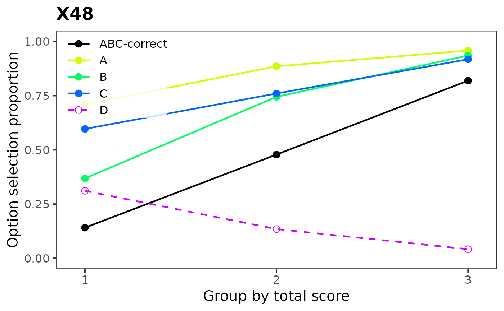
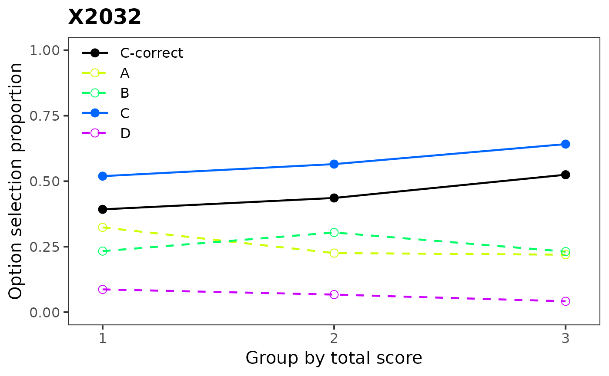

Plots graphical representation of item distractor analysis with proportions and optional number of groups.
Usage
plotDistractorAnalysis(
Data,
key,
num.groups = 3,
item = 1,
item.name,
multiple.answers = TRUE,
criterion = NULL,
crit.discrete = FALSE,
cut.points,
data,
matching,
match.discrete
)Arguments
- Data
character: data matrix or data.frame with rows representing unscored item response from a multiple-choice test and columns corresponding to the items.
- key
character: answer key for the items. The
keymust be a vector of the same length asncol(Data). In case it is not provided,criterionneeds to be specified.- num.groups
numeric: number of groups to which are the respondents split.
- item
numeric: the number of the item to be plotted.
- item.name
character: the name of the item.
- multiple.answers
logical: should be all combinations plotted (default) or should be answers split into distractors. See Details.
- criterion
numeric: numeric vector. If not provided, total score is calculated and distractor analysis is performed based on it.
- crit.discrete
logical: is
criteriondiscrete? Default value isFALSE.- cut.points
numeric: numeric vector specifying cut points of
criterion.- data
deprecated. Use argument
Datainstead.- matching
deprecated. Use argument
criterioninstead.- match.discrete
deprecated. Use argument
crit.discreteinstead.
Details
This function is a graphical representation of the
DistractorAnalysis() function. In case that no criterion is
provided, the scores are calculated using the item Data and
key. The respondents are by default split into the
num.groups-quantiles and the proportions of respondents in each
quantile are displayed with respect to their answers. In case
that criterion is discrete (crit.discrete = TRUE),
criterion is split based on its unique levels. Other cut points
can be specified via cut.points argument.
If multiple.answers = TRUE (default) all reported combinations
of answers are plotted. If multiple.answers = FALSE all
combinations are split into distractors and only these are then
plotted with correct combination.
Author
Adela Hladka
Institute of Computer Science of the Czech Academy of Sciences
hladka@cs.cas.cz
Patricia Martinkova
Institute of Computer Science of the Czech Academy of Sciences
martinkova@cs.cas.cz
Examples
Data <- dataMedicaltest[, 1:100]
DataBin <- dataMedical[, 1:100]
key <- dataMedicalkey
# distractor plot for items 48, 57 and 32 displaying distractors only
# correct answer B does not function well:
plotDistractorAnalysis(Data, key, item = 48, multiple.answers = FALSE)
#> $X2048

#>
# all options function well, thus the whole item discriminates well:
plotDistractorAnalysis(Data, key, item = 57, multiple.answers = FALSE)
#> $X48

#>
# functions well, thus the whole item discriminates well:
plotDistractorAnalysis(Data, key, item = 32, multiple.answers = FALSE)
#> $X2032

#>
if (FALSE) { # \dontrun{
# distractor plot for items 48, 57 and 32 displaying all combinations
plotDistractorAnalysis(Data, key, item = c(48, 57, 32))
# distractor plot for item 57 with all combinations and 6 groups
plotDistractorAnalysis(Data, key, item = 57, num.group = 6)
# distractor plot for item 57 using specified criterion and key option
criterion <- round(rowSums(DataBin), -1)
plotDistractorAnalysis(Data, key, item = 57, criterion = criterion)
# distractor plot for item 57 using specified criterion without key option
plotDistractorAnalysis(Data, item = 57, criterion = criterion)
# distractor plot for item 57 using discrete criterion
plotDistractorAnalysis(Data, key,
item = 57, criterion = criterion,
crit.discrete = TRUE
)
# distractor plot for item 57 using groups specified by cut.points
plotDistractorAnalysis(Data, key, item = 57, cut.points = seq(10, 96, 10))
} # }